gramm examples and how-tos
Contents
- Example from the readme
- Grouping options in gramm
- Methods for visualizing Y~X relationships with X as categorical variable
- Methods for visualizing X densities
- Methods for visualizing Y~X relationship with both X and Y as continuous variables
- Methods for visualizing custom confidence intervals
- Methods for visualizing 2D densities
- Methods for visualizing repeated trajectories
- Methods for visualizing repeated densities (e.g. spike densities)
- Options for separating groups across subplots with facet_grid()
- Options for creating histograms with stat_bin()
- Visualize x-y difference with inset histogram using stat_cornerhist()
- Graphic and normalization options in stat_violin()
- Options for dodging and spacing graphic elements in stat_summary() and stat_boxplot()
- Plotting text or labeling with geom_label()
- Smooth continuous data with stat_smooth()
- Superimposing gramm plots with update(): Using different groups for different stat_ and geom_ methods
- Superimposing gramm plots with update(): Plotting all the data in the background of facets
- Use custom layouts in gramm, marginal histogram example
- Plot one variable against many others
- Customizing color maps with set_color_options()
- Customizing color/lightness maps and legends with set_color_options()
- Using a continuous color scale
- Changing the order of elements with set_order_options()
- Customize the size and style of graphic elements with set_line_options() and set_point_options()
- Decorate plot backgrounds with geom_polygon()
- Advanced customization of gramm figures
- Using different input formats for x and y (1D arrays, cells of arrays, 2D arrays)
- Raw matlab code equivalent to the first figure (in paper.md)
Example from the readme
Here we plot the evolution of fuel economy of new cars bewteen 1970 and 1980 (carbig dataset). Gramm is used to easily separate groups on the basis of the number of cylinders of the cars (color), and on the basis of the region of origin of the cars (subplot columns). Both the raw data (points) and a glm fit with 95% confidence interval (line+shaded area) are plotted.
We stat by loading the sample data (structure created from the carbig dataset)
load example_data;
Create a gramm object, provide x (year of production) and y (fuel economy) data, color grouping data (number of cylinders) and select a subset of the data
g=gramm('x',cars.Model_Year,'y',cars.MPG,'color',cars.Cylinders,'subset',cars.Cylinders~=3 & cars.Cylinders~=5);
Subdivide the data in subplots horizontally by region of origin using facet_grid()
g.facet_grid([],cars.Origin_Region);
Plot raw data as points
g.geom_point();
Plot linear fits of the data with associated confidence intervals
g.stat_glm();
Set appropriate names for legends
g.set_names('column','Origin','x','Year of production','y','Fuel economy (MPG)','color','# Cylinders');
Set figure title
g.set_title('Fuel economy of new cars between 1970 and 1982');
Do the actual drawing
figure('Position',[100 100 800 400]);
g.draw();
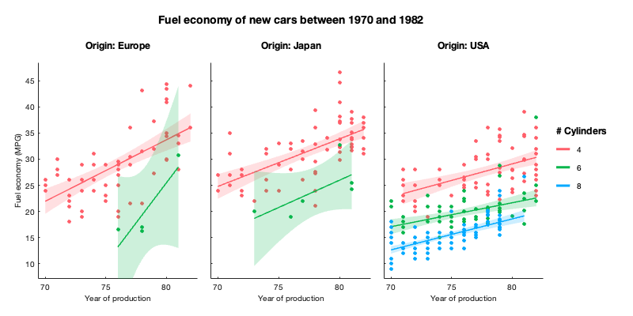 Grouping options in gramm
With gramm there are a lot ways to map groups to visual properties of plotted data, or even subplots. Providing grouping variables to change visual properties is done in the constructor call gramm(). Grouping variables that determine subplotting are provided by calls to the facet_grid() or facet_wrap() methods. Note that all the mappings presented below can be combined, i.e. it's possible to previde different variables to each of the options.
In order to plot multiple, diferent gramm objects in the same figure, an array of gramm objects is created, and the draw() function called at the end on the whole array
clear g g(1,1)=gramm('x',cars.Horsepower,'y',cars.MPG,'subset',cars.Cylinders~=3 & cars.Cylinders~=5); g(1,1).geom_point(); g(1,1).set_names('x','Horsepower','y','MPG'); g(1,1).set_title('No groups'); g(1,2)=gramm('x',cars.Horsepower,'y',cars.MPG,'subset',cars.Cylinders~=3 & cars.Cylinders~=5,'color',cars.Cylinders); g(1,2).geom_point(); g(1,2).set_names('x','Horsepower','y','MPG','color','# Cyl'); g(1,2).set_title('color'); g(1,3)=gramm('x',cars.Horsepower,'y',cars.MPG,'subset',cars.Cylinders~=3 & cars.Cylinders~=5,'lightness',cars.Cylinders); g(1,3).geom_point(); g(1,3).set_names('x','Horsepower','y','MPG','lightness','# Cyl'); g(1,3).set_title('lightness'); g(2,1)=gramm('x',cars.Horsepower,'y',cars.MPG,'subset',cars.Cylinders~=3 & cars.Cylinders~=5,'size',cars.Cylinders); g(2,1).geom_point(); g(2,1).set_names('x','Horsepower','y','MPG','size','# Cyl'); g(2,1).set_title('size'); g(2,2)=gramm('x',cars.Horsepower,'y',cars.MPG,'subset',cars.Cylinders~=3 & cars.Cylinders~=5,'marker',cars.Cylinders); g(2,2).geom_point(); g(2,2).set_names('x','Horsepower','y','MPG','marker','# Cyl'); g(2,2).set_title('marker'); g(2,3)=gramm('x',cars.Horsepower,'y',cars.MPG,'subset',cars.Cylinders~=3 & cars.Cylinders~=5,'linestyle',cars.Cylinders); g(2,3).geom_line(); g(2,3).set_names('x','Horsepower','y','MPG','linestyle','# Cyl'); g(2,3).set_title('linestyle'); g(3,1)=gramm('x',cars.Horsepower,'y',cars.MPG,'subset',cars.Cylinders~=3 & cars.Cylinders~=5); g(3,1).facet_grid(cars.Cylinders,[]); g(3,1).geom_point(); g(3,1).set_names('x','Horsepower','y','MPG','row','# Cyl'); g(3,1).set_title('subplot rows'); g(3,2)=gramm('x',cars.Horsepower,'y',cars.MPG,'subset',cars.Cylinders~=3 & cars.Cylinders~=5); g(3,2).facet_grid([],cars.Cylinders); g(3,2).geom_point(); g(3,2).set_names('x','Horsepower','y','MPG','column','# Cyl'); g(3,2).set_title('subplot columns'); figure('Position',[100 100 800 800]); g.draw();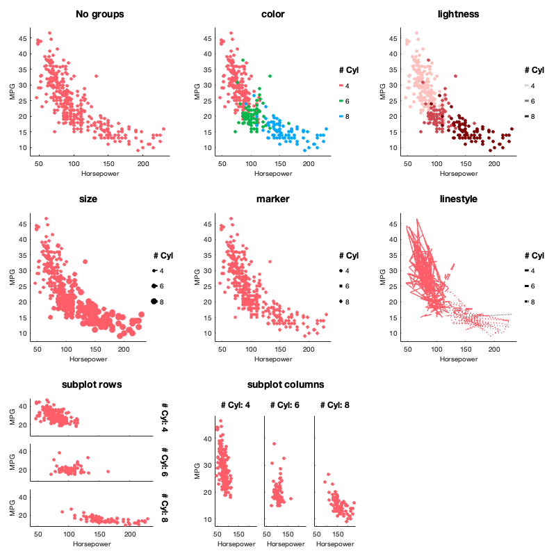
Methods for visualizing Y~X relationships with X as categorical variable
The following methods can be used when Y data is continuous and X data discrete/categorical.
Here we also use an array of gramm objects in order to have multiple gramm plots on the same figure. The gramm objects use the same data, so we copy them after construction using the copy() method. We also duplicate the whole array of gramm objects before drawing in order to demonstrate the use of coord_flip() to exchange X and Y axes
clear g g(1,1)=gramm('x',cars.Origin_Region,'y',cars.Horsepower,'color',cars.Cylinders,'subset',cars.Cylinders~=3 & cars.Cylinders~=5); g(1,2)=copy(g(1)); g(1,3)=copy(g(1)); g(2,1)=copy(g(1)); g(2,2)=copy(g(1)); %Raw data as scatter plot g(1,1).geom_point(); g(1,1).set_title('geom_point()'); %Jittered scatter plot g(1,2).geom_jitter('width',0.4,'height',0); g(1,2).set_title('geom_jitter()'); %Averages with confidence interval g(1,3).stat_summary('geom',{'bar','black_errorbar'}); g(1,3).set_title('stat_summary()'); %Boxplots g(2,1).stat_boxplot(); g(2,1).set_title('stat_boxplot()'); %Violin plots g(2,2).stat_violin('fill','transparent'); g(2,2).set_title('stat_violin()'); %These functions can be called on arrays of gramm objects g.set_names('x','Origin','y','Horsepower','color','# Cyl'); g.set_title('Visualization of Y~X relationships with X as categorical variable'); gf = copy(g); figure('Position',[100 100 800 550]); g.draw(); gf.set_title('Visualization of Y~X relationships with X as categorical variable and flipped coordinates'); figure('Position',[100 100 800 550]); gf.coord_flip(); gf.draw();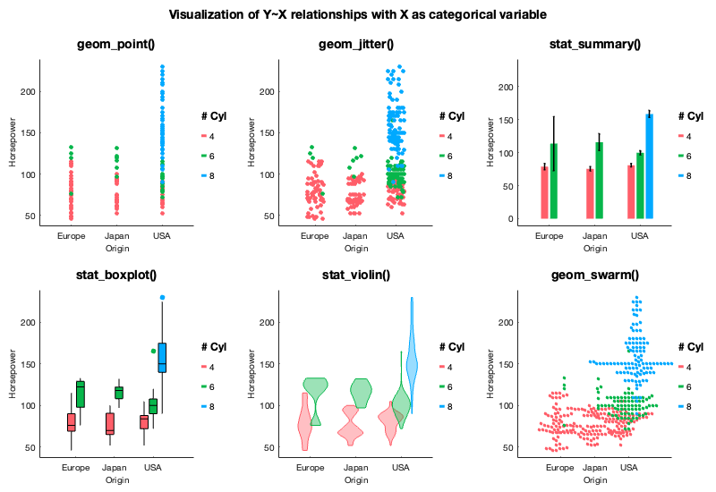 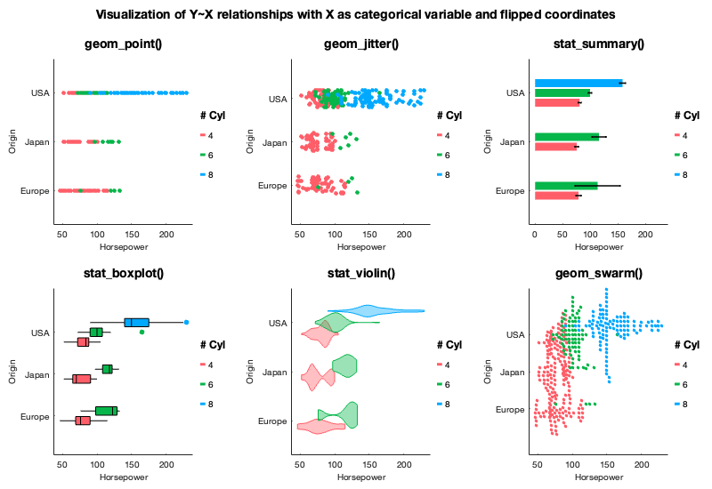
Methods for visualizing X densities
The following methods can be used in order to represent the density of a continuous variable. Note that here we represent the same data as in the previous figure, this time with Horsepower as X (over which the densities are represented), and separating the region of origin with subplots.
clear g g(1,1)=gramm('x',cars.Horsepower,'color',cars.Cylinders,'subset',cars.Cylinders~=3 & cars.Cylinders~=5); g(1,2)=copy(g(1)); g(2,1)=copy(g(1)); g(2,2)=copy(g(1)); %Raw data as raster plot g(1,1).facet_grid(cars.Origin_Region,[]); g(1,1).geom_raster(); g(1,1).set_title('geom_raster()'); %Histogram g(1,2).facet_grid(cars.Origin_Region,[]); g(1,2).stat_bin('nbins',8); g(1,2).set_title('stat_bin()'); %Kernel smoothing density estimate g(2,1).facet_grid(cars.Origin_Region,[]); g(2,1).stat_density(); g(2,1).set_title('stat_density()'); % Q-Q plot for normality g(2,2).facet_grid(cars.Origin_Region,[]); g(2,2).stat_qq(); g(2,2).axe_property('XLim',[-5 5]); g(2,2).set_title('stat_qq()'); g.set_names('x','Horsepower','color','# Cyl','row','','y',''); g.set_title('Visualization of X densities'); figure('Position',[100 100 800 550]); g.draw();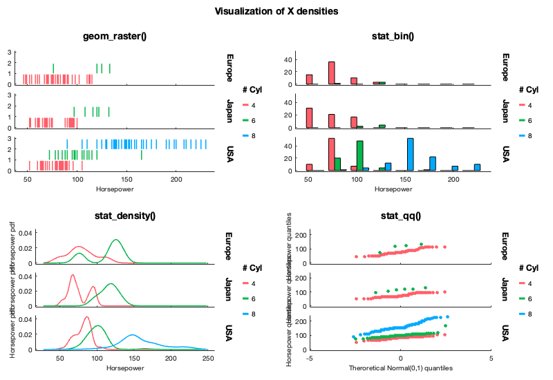
Methods for visualizing Y~X relationship with both X and Y as continuous variables
The following methods can be used when both X and Y data are continuous
clear g %Raw data as scatter plot g(1,1)=gramm('x',cars.Horsepower,'y',cars.Acceleration,'color',cars.Cylinders,'subset',cars.Cylinders~=3 & cars.Cylinders~=5); g(1,2)=copy(g(1)); g(1,3)=copy(g(1)); g(2,1)=copy(g(1)); g(2,2)=copy(g(1)); g(1,1).geom_point(); g(1,1).set_title('geom_point()'); %Generalized linear model fit g(1,2).stat_glm(); g(1,2).set_title('stat_glm()'); %Custom fit with provided function g(1,3).stat_fit('fun',@(a,b,c,x)a./(x+b)+c,'intopt','functional'); g(1,3).set_title('stat_fit(''fun'',@(a,b,c,x)a./(x+b)+c)'); %Spline smoothing g(2,1).stat_smooth(); g(2,1).set_title('stat_smooth()'); %Moving average g(2,2).stat_summary('bin_in',10); g(2,2).set_title('stat_summary(''bin_in'',10)'); g.set_names('x','Horsepower','y','Acceleration','color','# Cylinders'); %Corner histogram g(2,3)=gramm('x',(cars.Horsepower-nanmean(cars.Horsepower))/nanstd(cars.Horsepower),'y',-(cars.Acceleration-nanmean(cars.Acceleration))/nanstd(cars.Acceleration),'color',cars.Cylinders,'subset',cars.Cylinders~=3 & cars.Cylinders~=5); g(2,3).geom_point(); g(2,3).stat_cornerhist('edges',-4:0.2:4,'aspect',0.6); g(2,3).geom_abline(); g(2,3).set_title('stat_cornerhist()'); g(2,3).set_names('x','z(Horsepower)','y','-z(Acceleration)'); g.set_title('Visualization of Y~X relationship with both X and Y as continuous variables'); figure('Position',[100 100 800 550]); g.draw();
Warning: Start point not provided, choosing random start point. Warning: Start point not provided, choosing random start point. Warning: Start point not provided, choosing random start point. Less than 2 samples for CI computation...Skipping Less than 2 samples for CI computation...Skipping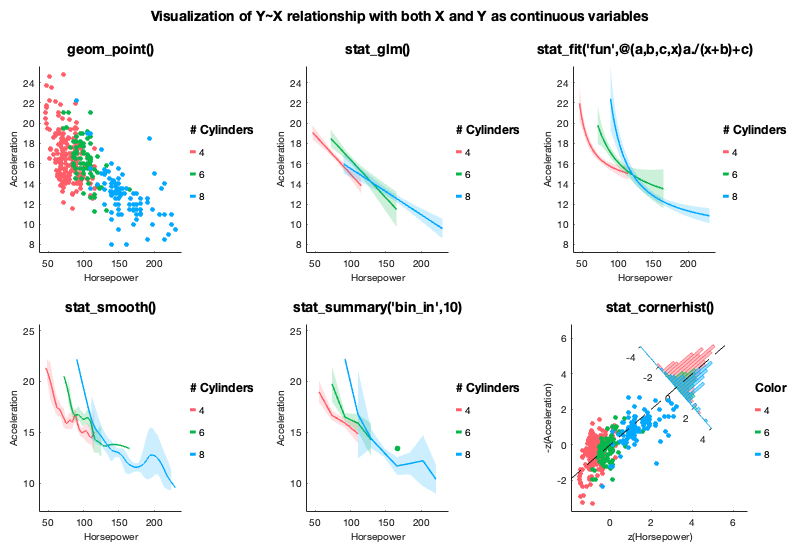
Methods for visualizing custom confidence intervals
With geom_interval() it is possible to plot custom confidence intervals by provinding 'ymin' and 'ymax' values to gramm(). All options to display confidence intervals in stat_summary() are available, including dodging. 'ymin' and 'ymax' are absolute, and not given relative to 'y'
cars_table=struct2table(cars); cars_summary=rowfun(@(hp)deal(nanmean(hp),bootci(200,@(x)nanmean(x),hp)'),cars_table(cars.Cylinders~=3 & cars.Cylinders~=5,:),... 'InputVariables',{'Horsepower'},... 'GroupingVariables',{'Origin_Region' 'Cylinders'},... 'OutputVariableNames',{'hp_mean' 'hp_ci'}); clear g %Bars and error bars g(1,1)=gramm('x',cars_summary.Origin_Region,'y',cars_summary.hp_mean,... 'ymin',cars_summary.hp_ci(:,1),'ymax',cars_summary.hp_ci(:,2),'color',cars_summary.Cylinders); g(1,1).set_names('x','Origin','y','Horsepower','color','# Cylinders'); g(1,1).geom_bar('dodge',0.8,'width',0.6); g(1,1).geom_interval('geom','black_errorbar','dodge',0.8,'width',1); %points and error bars g(1,2)=gramm('x',categorical(cars_summary.Cylinders),'y',cars_summary.hp_mean,... 'ymin',cars_summary.hp_ci(:,1),'ymax',cars_summary.hp_ci(:,2),'color',cars_summary.Origin_Region); g(1,2).set_names('color','Origin','y','Horsepower','x','# Cylinders'); g(1,3)=copy(g(1,2)); g(1,2).set_color_options('map','matlab'); g(1,2).geom_point('dodge',0.2); g(1,2).geom_interval('geom','errorbar','dodge',0.2,'width',0.8); %Shaded area g(1,3).geom_interval('geom','area'); figure('Position',[100 100 800 450]); g.axe_property('YLim',[-10 190]); g.draw();
Methods for visualizing 2D densities
The following methods can be used to visualize 2D densities for bivariate data
%Create point cloud with two categories N=10^4; x=randn(1,N); y=x+randn(1,N); test=repmat([0 1 0 0],1,N/4); y(test==0)=y(test==0)+3; clear g % Display points and 95% percentile confidence ellipse g(1,1)=gramm('x',x,'y',y,'color',test); g(1,1).set_names('color','grp'); g(1,1).geom_point(); %'patch_opts' can be used to provide more options to the patch() internal %call g(1,1).set_point_options('base_size',2); g(1,1).stat_ellipse('type','95percentile','geom','area','patch_opts',{'FaceAlpha',0.1,'LineWidth',2}); g(1,1).set_title('stat_ellispe()'); %Plot point density as contour plot g(1,2)=gramm('x',x,'y',y,'color',test); g(1,2).stat_bin2d('nbins',[10 10],'geom','contour'); g(1,2).set_names('color','grp'); g(1,2).set_title('stat_bin2d(''geom'',''contour'')'); % %Plot density as point size (looks good only when axes have the same % %scale, hence the 'DataAspectRatio' option, equivalent to axis equal) % g(2,1)=gramm('x',x,'y',y,'color',test); % g(2,1).stat_bin2d('nbins',{-10:0.4:10 ; -10:0.4:10},'geom','point'); % g(2,1).axe_property('DataAspectRatio',[1 1 1]); % g(2,1).set_names('color','grp'); % g(2,1).set_title('stat_bin2d(''geom'',''point'')'); %Plot density as heatmaps (Heatmaps don't work with multiple colors, so we separate %the categories with facets). With the heatmap we see better the %distribution in high-density areas g(2,1)=gramm('x',x,'y',y); g(2,1).facet_grid([],test); g(2,1).stat_bin2d('nbins',[20 20],'geom','image'); %g(2,1).set_continuous_color('LCH_colormap',[0 100 ; 100 20 ;30 20]); %Let's try a custom LCH colormap ! g(2,1).set_names('column','grp','color','count'); g(2,1).set_title('stat_bin2d(''geom'',''image'')'); g(2,2)=gramm('x',x,'y',y,'color',test); g(2,2).geom_point('alpha',0.05); g(2,2).set_point_options('base_size',6); g(2,2).set_title('geom_point(''alpha'',0.05)'); g.set_title('Visualization of 2D densities'); figure('Position',[100 100 800 600]) g.draw();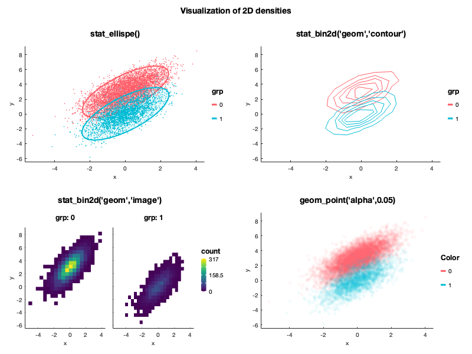
Methods for visualizing repeated trajectories
gramm supports 2D inputs for X and Y data (as 2D array or cell of arrays), which is particularly useful for representing repeated trajectories. Here for example we generate 50 trajectories, each of length 40. The grouping data is then given per trajectory and not per data point. Here the color grouping variable is thus given as a 1x50 cellstr.
%We generate 50 trajectories of length 40, with 3 groups N=50; nx=40; cval={'A' 'B' 'C'}; cind=randi(3,N,1); c=cval(cind); x=linspace(0,3,nx); y=arrayfun(@(c)sin(x*c)+randn(1,nx)/10+x*randn/5,cind,'UniformOutput',false); clear g g(1,1)=gramm('x',x,'y',y,'color',c); g(1,2)=copy(g(1)); g(2,1)=copy(g(1)); g(2,2)=copy(g(1)); g(1,1).geom_point(); g(1,1).set_title('geom_point()'); g(1,2).geom_line(); g(1,2).set_title('geom_line()'); g(2,1).stat_smooth(); g(2,1).set_point_options('base_size',3); g(2,1).set_title('stat_smooth()'); g(2,2).stat_summary(); g(2,2).set_title('stat_summary()'); g.set_title('Visualization of repeated trajectories '); figure('Position',[100 100 800 550]); g.draw();

Methods for visualizing repeated densities (e.g. spike densities)
With the support of 2D inputs for X and gramm's functionality for representing the density of data, useful neuroscientific plots can be generated when the provided X corresponds to spike trains: raster plots and peristimulus time histograms (PSTHs).
%We generate 50 spike trains, with 3 groups N=50; cval={'A' 'B' 'C'}; cind=randi(3,N,1); c=cval(cind); train_template=[zeros(1,300) ones(1,200)]; %Pseudo-poisson spike trains spike_train=cell(N,1); for k=1:N temp_train=rand*0.05+train_template/(cind(k)*8); U=rand(size(temp_train)); spike_train{k}=find(U<temp_train); end clear g g(1,1)=gramm('x',spike_train,'color',c); g(1,1).geom_raster(); g(1,1).set_title('geom_raster()'); g(1,2)=gramm('x',spike_train,'color',c); g(1,2).stat_bin('nbins',25,'geom','line'); g(1,2).set_title('stat_bin()'); g.set_names('x','Time','y',''); g.set_title('Visualization of spike densities'); figure('Position',[100 100 800 350]); g.draw();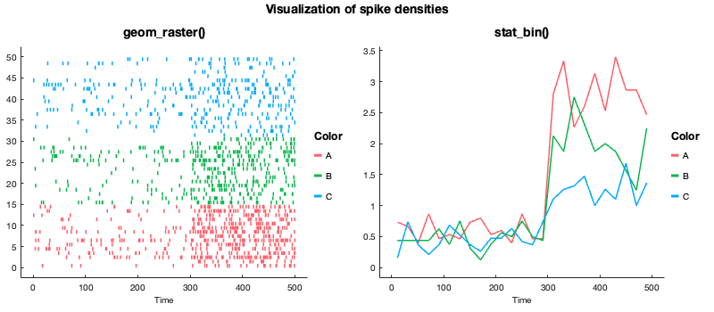
Options for separating groups across subplots with facet_grid()
To separate groups in different rows and columns of sublots, the grouping variable just need to be passed to the facet_grid(goup_rows,group_columns) function or facet_wrap(group_columns). Both have multiple options concerning the scaling of data between subplots.
- By default 'scale','fixed' all subplots have the same limits
- 'scale','free_x': subplots on the same columns have the same x limits
- 'scale','free_y': subplots on the same rows have the same y limits
- 'scale','free': subplots on the same rows have the same y limits, subplots on the same columns have the same x limits
- 'scale','independent': subplots have independent limits
In facet_grid(); the 'space' option allows to set how the subplot axes themselves scale with the data. It should be used in conjunction with the corresponding 'scale' option.
% Generating fake data N=1000; colval={'A' 'B' 'C'}; rowval={'I' 'II'}; cind=randi(3,N,1); c=colval(cind); rind=randi(2,N,1); r=rowval(rind); x=randn(N,1); y=randn(N,1); x(cind==1 & rind==1)=x(cind==1 & rind==1)*5; x=x+cind*3; y(cind==3 & rind==2)=y(cind==3 & rind==2)*3; y=y-rind*4; clear g g(1,1)=gramm('x',x,'y',y,'color',c,'lightness',r); g(1,2)=copy(g(1)); g(2,1)=copy(g(1)); g(2,2)=copy(g(1)); g(3,1)=copy(g(1)); g(3,2)=copy(g(1)); g(1,1).geom_point(); g(1,1).set_title('No facets'); g(1,2).facet_grid(r,c); g(1,2).geom_point(); g(1,2).no_legend(); g(1,2).set_title('facet_grid()'); g(2,1).facet_grid(r,c,'scale','free'); g(2,1).geom_point(); g(2,1).no_legend(); g(2,1).set_title('facet_grid(''scale'',''free'')'); g(2,2).facet_grid(r,c,'scale','free','space','free'); g(2,2).geom_point(); g(2,2).no_legend(); g(2,2).set_title('facet_grid(''scale'',''free'',''space'',''free'')'); g(3,1).facet_grid(r,c,'scale','free_x'); g(3,1).geom_point(); g(3,1).no_legend(); g(3,1).set_title('facet_grid(''scale'',''free_x'')'); g(3,2).facet_grid(r,c,'scale','independent'); g(3,2).geom_point(); g(3,2).no_legend(); g(3,2).set_title('facet_grid(''scale'',''independent'')'); g.set_color_options('lightness_range',[40 80],'chroma_range',[80 40]); g.set_names('column','','row',''); %g.axe_property('color',[0.9 0.9 0.9],'XGrid','on','YGrid','on','GridColor',[1 1 1],'GridAlpha',0.8,'TickLength',[0 0],'XColor',[0.3 0.3 0.3],'YColor',[0.3 0.3 0.3]) gf = copy(g); figure('Position',[100 100 800 800]); g.set_title('facet_grid() options'); g.draw(); figure('Position',[100 100 800 800]); gf.set_title({'facet_grid() options' 'work together with coord_flip()'}); gf.coord_flip(); gf.draw();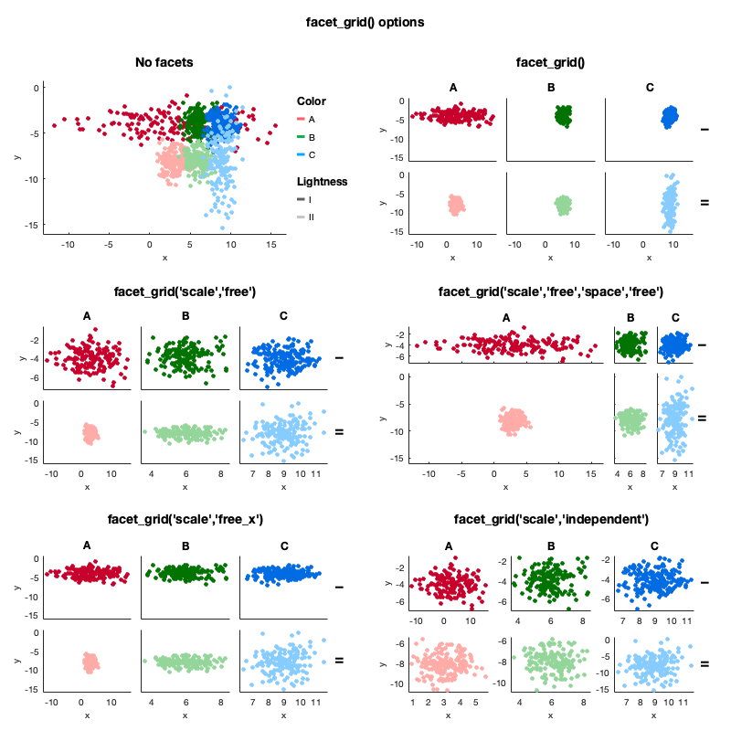 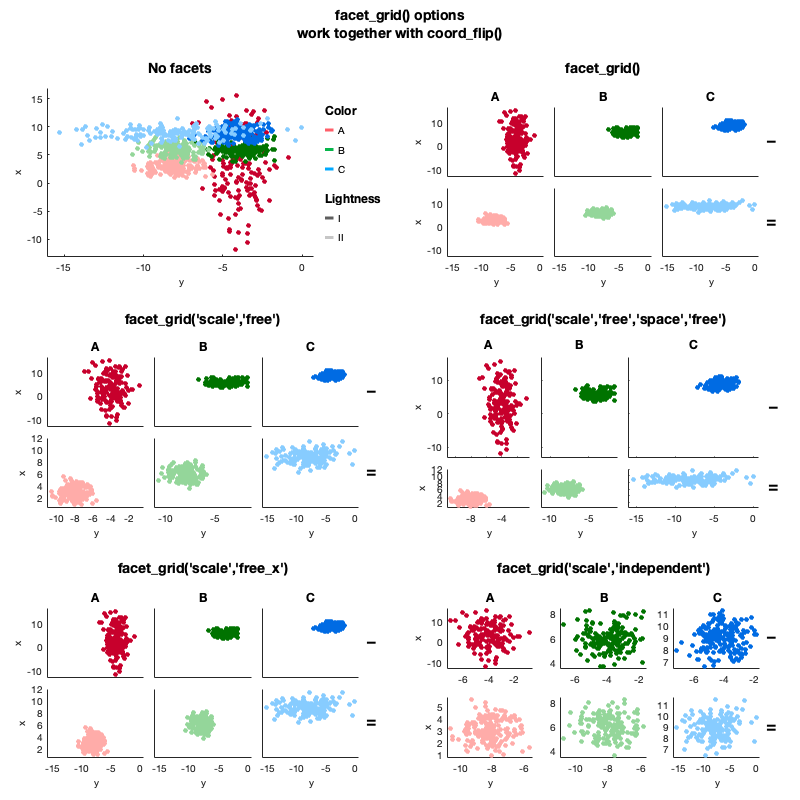
Options for creating histograms with stat_bin()
Example of different 'geom' options:
- 'bar' (default), where color groups are side-by-side (dodged)
- 'stacked_bar'
- 'line'
- 'overlaid_bar'
- 'point'
- 'stairs'
%Create variables x=randn(1200,1)-1; cat=repmat([1 1 1 2],300,1); x(cat==2)=x(cat==2)+2; clear g5 g5(1,1)=gramm('x',x,'color',cat); g5(1,2)=copy(g5(1)); g5(1,3)=copy(g5(1)); g5(2,1)=copy(g5(1)); g5(2,2)=copy(g5(1)); g5(2,3)=copy(g5(1)); g5(1,1).stat_bin(); %by default, 'geom' is 'bar', where color groups are side-by-side (dodged) g5(1,1).set_title('''bar'' (default)'); g5(1,2).stat_bin('geom','stacked_bar'); %Stacked bars option g5(1,2).set_title('''stacked_bar'''); g5(2,1).stat_bin('geom','line'); %Draw lines instead of bars, easier to visualize when lots of categories, default fill to edges ! g5(2,1).set_title('''line'''); g5(2,2).stat_bin('geom','overlaid_bar'); %Overlaid bar automatically changes bar coloring to transparent g5(2,2).set_title('''overlaid_bar'''); g5(1,3).stat_bin('geom','point'); g5(1,3).set_title('''point'''); g5(2,3).stat_bin('geom','stairs'); %Default fill is edges g5(2,3).set_title('''stairs'''); g5.set_title('''geom'' options for stat_bin()'); figure('Position',[100 100 800 600]); g5.draw();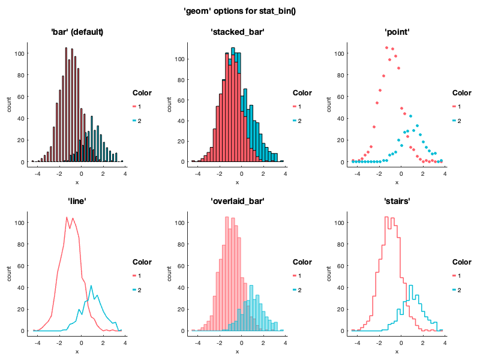
Example of alternative 'fill' options
- 'face'
- 'all'
- 'edge'
- 'transparent'
clear g6 g6(1,1)=gramm('x',x,'color',cat); g6(1,2)=copy(g6(1)); g6(1,3)=copy(g6(1)); g6(2,1)=copy(g6(1)); g6(2,2)=copy(g6(1)); g6(2,3)=copy(g6(1)); g6(1,1).stat_bin('fill','face'); g6(1,1).set_title('''face'''); g6(1,2).stat_bin('fill','transparent'); g6(1,2).set_title('''transparent'''); g6(1,3).stat_bin('fill','all'); g6(1,3).set_title('''all'''); g6(2,1).stat_bin('fill','edge'); g6(2,1).set_title('''edge'''); g6(2,2).stat_bin('geom','stairs','fill','transparent'); g6(2,2).set_title('''transparent'''); g6(2,3).stat_bin('geom','line','fill','all'); g6(2,3).set_title('''all'''); g6.set_title('''fill'' options for stat_bin()'); figure('Position',[100 100 800 600]); g6.draw();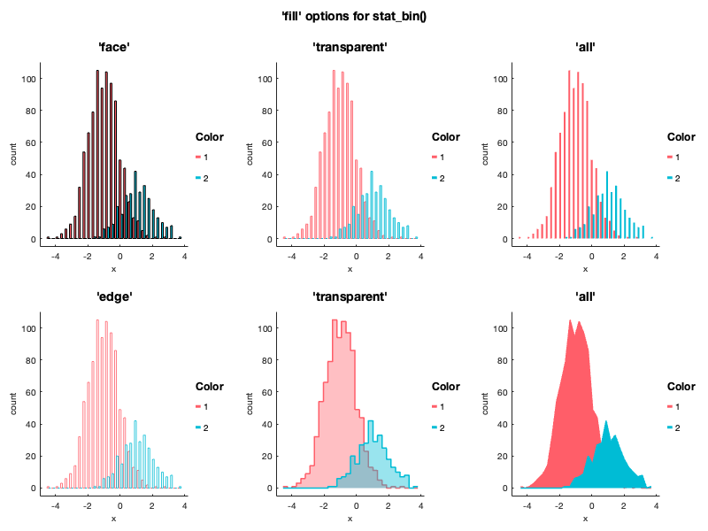
Examples of other histogram-generation options
- Default binning
- 'normalization','probability'
- 'normalization','cumcount'
- 'normalization','cdf'
- 'edges',-1:0.5:10
- 'normalization','countdensity' and custom edges
clear g7 g7(1,1)=gramm('x',x,'color',cat); g7(1,2)=copy(g7(1)); g7(1,3)=copy(g7(1)); g7(2,1)=copy(g7(1)); g7(2,2)=copy(g7(1)); g7(2,3)=copy(g7(1)); g7(1,1).stat_bin('geom','overlaid_bar'); %Default binning (30 bins) %Normalization to 'probability' g7(2,1).stat_bin('normalization','probability','geom','overlaid_bar'); g7(2,1).set_title('''normalization'',''probability''','FontSize',10); %Normalization to cumulative count g7(1,2).stat_bin('normalization','cumcount','geom','stairs'); g7(1,2).set_title('''normalization'',''cumcount''','FontSize',10); %Normalization to cumulative density g7(2,2).stat_bin('normalization','cdf','geom','stairs'); g7(2,2).set_title('''normalization'',''cdf''','FontSize',10); %Custom edges for the bins g7(1,3).stat_bin('edges',-1:0.5:10,'geom','overlaid_bar'); g7(1,3).set_title('''edges'',-1:0.5:10','FontSize',10); %Custom edges with non-constand width (normalization 'countdensity' %recommended) g7(2,3).stat_bin('geom','overlaid_bar','normalization','countdensity','edges',[-5 -4 -2 -1 -0.5 -0.25 0 0.25 0.5 1 2 4 5]); g7(2,3).set_title({'''normalization'',''countdensity'',' '''edges'',' '[-5 -4 -2 -1 -0.5 -0.25 0 0.25 0.5 1 2 4 5]'},'FontSize',10); g7.set_title('Other options for stat_bin()'); figure('Position',[100 100 800 600]); g7.draw();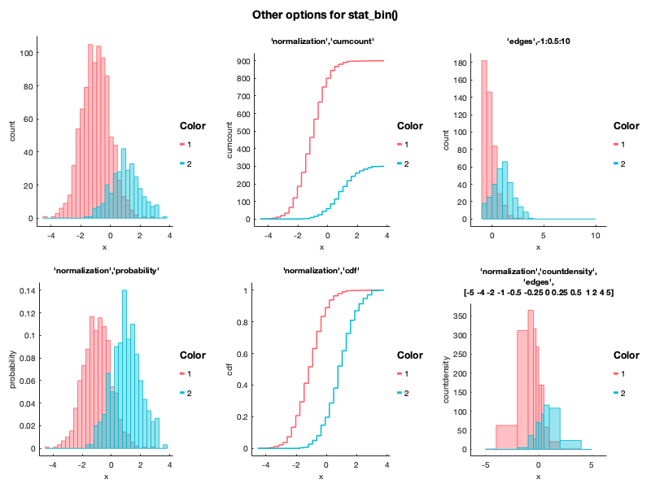
Visualize x-y difference with inset histogram using stat_cornerhist()
%Generate sample data N=200; x=randn(1,N*4); y=x+randn(1,N*4)/2; c=repmat([1 2],1,N*2); b=repmat([1 2 2 2],1,N); y(c==1 & b==2)=y(c==1 & b==2)+2; clear g g=gramm('x',x,'y',y,'color',c); g.facet_grid([],b); g.geom_point(); g.stat_cornerhist('edges',-4:0.1:2,'aspect',0.5); g.geom_abline(); g.set_title('Visualize x-y with stat_cornerhist()'); figure('Position',[100 100 800 600]); g.draw(); %Possibility to use axe handles of the inset axes to add elements or change %properties plot(g.results.stat_cornerhist(2).child_axe_handle,[-2 -2],[0 50],'k:','LineWidth',2) %set([g.results.stat_cornerhist.child_axe_handle],'XTick',[])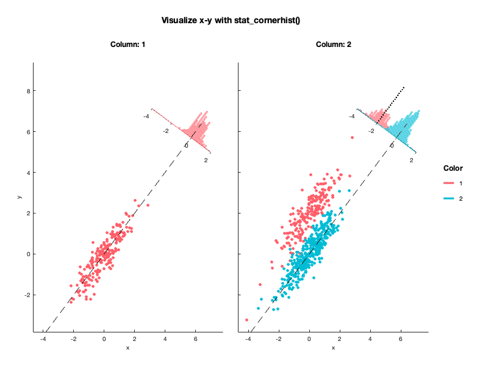
Graphic and normalization options in stat_violin()
clear g g(1,1)=gramm('x',cars.Origin_Region,'y',cars.Horsepower,'color',cars.Cylinders,'subset',cars.Cylinders~=3 & cars.Cylinders~=5); g(1,1).set_names('x','Origin','y','Horsepower','color','# Cyl'); g(1,2)=copy(g(1,1)); g(1,3)=copy(g(1,1)); g(2,1)=copy(g(1,1)); g(2,2)=copy(g(1,1)); %Jittered scatter plot g(1,1).geom_jitter('width',0.6,'height',0,'dodge',0.7); g(1,1).set_title('jittered data'); g(1,2).stat_violin('normalization','area'); g(1,2).set_title('''normalization'',''area'' (Default)'); g(1,3).stat_violin('normalization','width'); g(1,3).set_title('''normalization'',''width'''); g(2,1).stat_violin('normalization','count','fill','all'); g(2,1).set_title('''normalization'',''count'' , ''fill'',''all'''); g(2,2).stat_violin('half',true,'normalization','count','width',1,'fill','transparent'); g(2,2).set_title('''half'',true , ''fill'',''transparent'''); g(2,3)=gramm('x',cars.Origin_Region,'y',cars.Horsepower,'color',cars.Origin_Region,'subset',cars.Cylinders~=3 & cars.Cylinders~=5); g(2,3).set_names('x','Origin','y','Horsepower','color','Origin'); g(2,3).stat_violin('normalization','area','dodge',0,'fill','edge'); g(2,3).stat_boxplot('width',0.15); g(2,3).set_title('with stat_boxplot()'); g(2,3).set_color_options('map','brewer_dark'); g.set_title('Options for stat_violin()'); figure('Position',[100 100 800 600]); g.draw();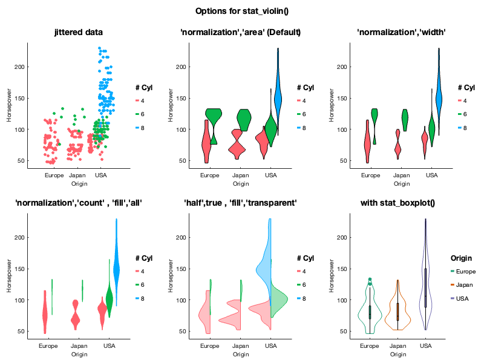
Options for dodging and spacing graphic elements in stat_summary() and stat_boxplot()
stat_summary() and stat_boxplot(), as well as stat_bin(), use a pair of options for setting the width of graphical elements ('width') and setting how elements of different colors can be dodged to the side to avoid overlap ('dodge')
%Create data x=repmat(1:10,1,100); catx=repmat({'A' 'B' 'C' 'F' 'E' 'D' 'G' 'H' 'I' 'J'},1,100); y=randn(1,1000)*3; c=repmat([1 1 1 1 1 1 1 1 1 1 1 1 2 2 2 2 2 3 2 2 2 1 1 2 2 2 2 3 2 3 2 1 1 2 2 2 2 2 2 2],1,25); y=2+y+x+c*0.5; clear g g(1,1)=gramm('x',catx,'y',y,'color',c); g(2,1)=copy(g(1)); g(3,1)=copy(g(1)); g(4,1)=copy(g(1)); g(5,1)=copy(g(1)); g(1,1).stat_boxplot(); g(1,1).geom_vline('xintercept',0.5:1:10.5,'style','k-'); g(1,1).set_title('''width'',0.6,''dodge'',0.7 (Default)'); g(2,1).stat_boxplot('width',0.5,'dodge',0); g(2,1).geom_vline('xintercept',0.5:1:10.5,'style','k-'); g(2,1).set_title('''width'',0.5,''dodge'',0'); g(3,1).stat_boxplot('width',1,'dodge',1); g(3,1).geom_vline('xintercept',0.5:1:10.5,'style','k-'); g(3,1).set_title('''width'',1,''dodge'',1'); g(4,1).stat_boxplot('width',0.6,'dodge',0.4); g(4,1).geom_vline('xintercept',0.5:1:10.5,'style','k-'); g(4,1).set_title('''width'',0.6,''dodge'',0.4'); g(5,1).facet_grid([],c); g(5,1).stat_boxplot('width',0.5,'dodge',0,'notch',true); g(5,1).set_title('''width'',0.5,''dodge'',0,''notch'',true'); g.set_title('Dodge and spacing options for stat_boxplot()'); figure('Position',[100 100 800 1000]); g.draw();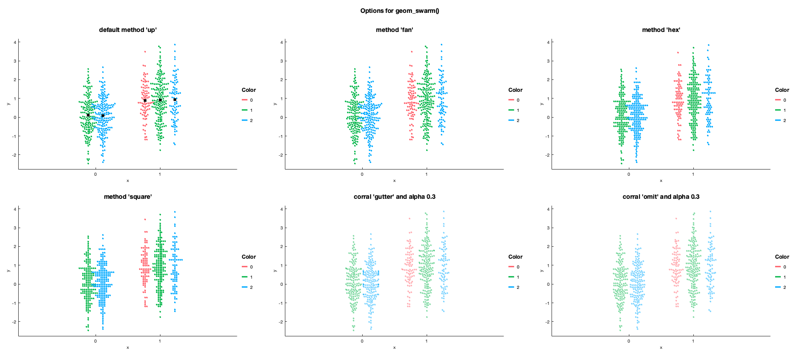
With stat_summary(), 'width' controls the width of bars and error bars.
clear g g(1,1)=gramm('x',catx,'y',y,'color',c); g(2,1)=copy(g(1)); g(3,1)=copy(g(1)); g(4,1)=copy(g(1)); g(5,1)=copy(g(1)); g(1,1).stat_summary('geom',{'bar' 'black_errorbar'},'setylim',true); g(1,1).geom_vline('xintercept',0.5:1:10.5,'style','k-'); g(1,1).set_title('Default dodging with ''geom'',''bar'''); g(2,1).stat_summary('geom',{'bar' 'black_errorbar'},'dodge',0.7,'width',0.7); g(2,1).set_title('''dodge'',0.7,''width'',0.7'); g(2,1).geom_vline('xintercept',0.5:1:10.5,'style','k-'); g(3,1).stat_summary('geom',{'area'}); g(3,1).set_title('''geom'',''area'''); g(3,1).set_title('No dodging with ''geom'',''area'''); g(4,1).stat_summary('geom',{'point' 'errorbar'},'dodge',0.3,'width',0.5); g(4,1).set_title('''dodge'',0.3,''width'',0.5'); g(4,1).geom_vline('xintercept',0.5:1:10.5,'style','k-'); g(5,1).facet_grid([],c); g(5,1).stat_summary('geom',{'bar' 'black_errorbar'},'width',0.5,'dodge',0); g(5,1).set_title('''width'',0.5,''dodge'',0'); g.set_title('Dodge and width options for stat_summary()'); figure('Position',[100 100 800 1000]); g.draw();
Plotting text or labeling with geom_label()
%Convert structure to a table cars_table=struct2table(cars); %Create short version of model names by removing manufacturer cars_table.ModelShort=cellfun(@(ma,mo)mo(length(ma)+1:end),cars_table.Manufacturer,cars_table.Model,'UniformOutput',false); figure('Position',[100 100 800 500]); clear g %Provide 'label' as data g(1,1)=gramm('x',cars_table.Horsepower,'y',cars_table.Acceleration,... 'label',cars_table.ModelShort,'color',cars_table.Manufacturer,'subset',strcmp(cars_table.Origin_Region,'Japan')); %geom_label() takes the same arguments as text(). %'BackgroundColor','EdgeColor' and 'Color' can be set to 'auto' g.geom_label('VerticalAlignment','middle','HorizontalAlignment','center','BackgroundColor','auto','Color','k'); g.set_limit_extra([0.2 0.2],[0.1 0.1]); g.set_names('color','Manufacturer','x','Horsepower','y','Acceleration'); g.set_color_options('map','brewer2'); g.draw(); figure('Position',[100 100 800 500]); clear g %Compute number of models outside of gramm so that the output can be used %as label temp_table=rowfun(@numel,cars_table,'OutputVariableNames','N','GroupingVariables',{'Origin_Region','Model_Year'},'InputVariables','MPG'); g=gramm('x',temp_table.Model_Year,'y',temp_table.N,'color',temp_table.Origin_Region,'label',temp_table.N); g.geom_bar('dodge',0.7,'width',0.6); g.geom_label('color','k','dodge',0.7,'VerticalAlignment','bottom','HorizontalAlignment','center'); g.set_names('color','Origin','x','Year','y','Number of models'); g.draw();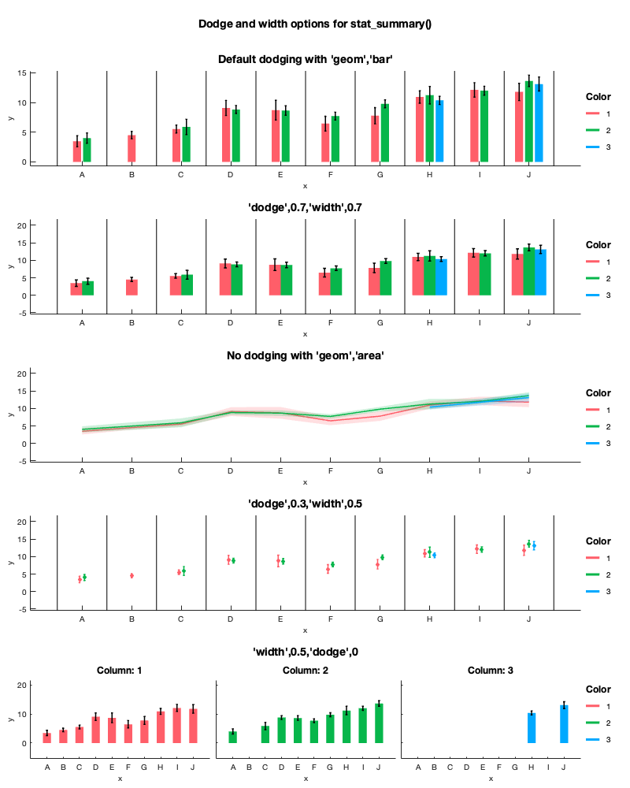 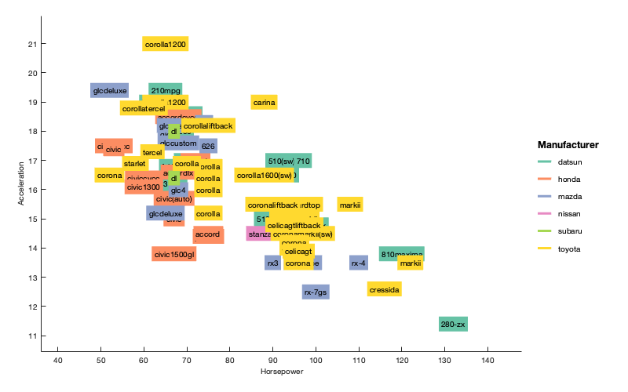
Smooth continuous data with stat_smooth()
x=0:0.02:9.8; y=sin(exp(x-5)/12); y(x<2)=y(x<2)+randn(1,sum(x<2))/2; y(x>=2)=y(x>=2)+randn(1,sum(x>=2))/8; figure('Position',[100 100 800 500]); clear g g=gramm('x',x,'y',y); g.geom_funline('fun',@(x)sin(exp(x-5)/12)); g.geom_vline('xintercept',2) g.axe_property('XLim',[0 9.8]); g(1,2)=copy(g(1)); g(1,3)=copy(g(1)); g(2,1)=copy(g(1)); g(2,2)=copy(g(1)); g(2,3)=copy(g(1)); g(1,1).geom_point(); g(1,1).set_title('Raw input'); g(1,2).stat_smooth(); g(1,2).set_title('stat_smooth() default'); g(1,3).stat_smooth('lambda','auto','npoints',500); g(1,3).set_title('default with ''lambda'',''auto'''); g(2,1).stat_smooth('method','sgolay','lambda',[31 3]); g(2,1).set_title('''method'',''sgolay'''); g(2,2).stat_smooth('method','moving','lambda',31); g(2,2).set_title('''method'',''moving'''); g(2,3).stat_smooth('method','loess','lambda',0.1); g(2,3).set_title('''method'',''loess'''); g.set_title('Options for stat_smooth()'); g.draw();
ans =
gramm with properties:
legend_axe_handle: []
title_axe_handle: []
facet_axes_handles: []
results: []
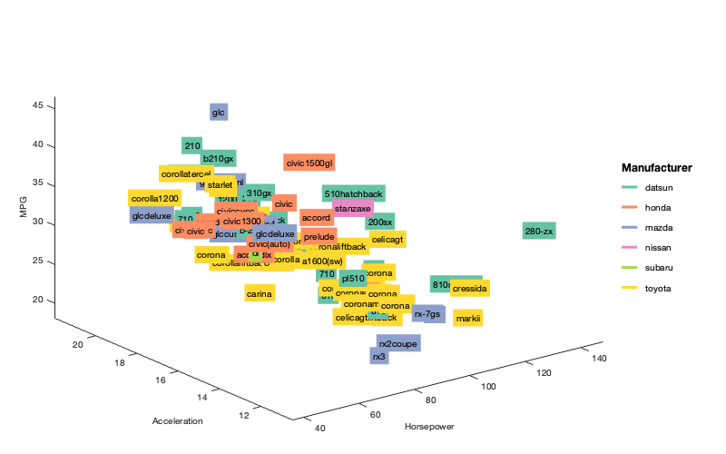 Superimposing gramm plots with update(): Using different groups for different stat_ and geom_ methods
By using the method update() after a first draw() call of a gramm object, it is possible to add or remove grouping variables. Here in a first gramm plot we make a glm fit of cars Acceleration as a function of Horsepower, across all countries and number of cylinders, and change the color options so that the fit appears in grey
clear g10 figure('Position',[100 100 600 450]); g10=gramm('x',cars.Horsepower,'y',cars.Acceleration,'subset',cars.Cylinders~=3 & cars.Cylinders~=5); g10.set_names('color','# Cylinders','x','Horsepower','y','Acceleration','Column','Origin'); g10.set_color_options('chroma',0,'lightness',30); g10.stat_glm('geom','area','disp_fit',false); g10.set_title('Update example'); %Title must be provided before the first draw() call g10.draw(); snapnow;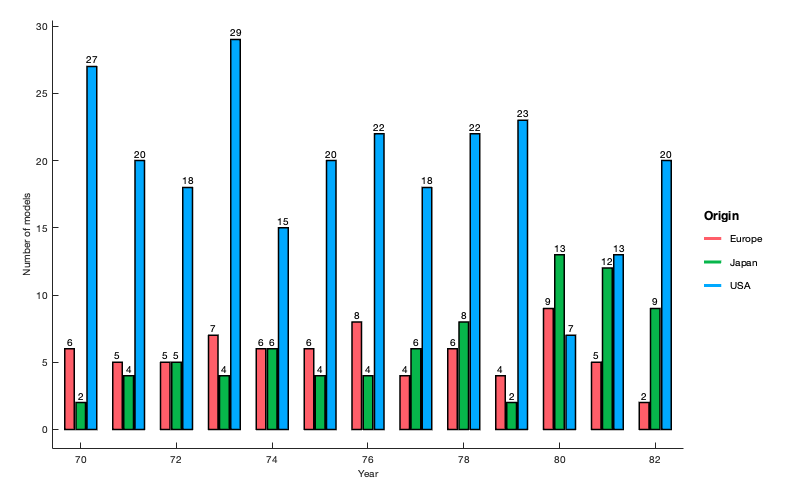
After the first draw() call (optional), we call the update() method by specifying a new grouping variable determining colors. We also change the facet_grid() options, which will duplicate the fit made earlier across all new facets. Last, color options are reinitialized to default values
g10.update('color',cars.Cylinders);
g10.facet_grid([],cars.Origin_Region);
g10.set_color_options();
g10.geom_point();
g10.draw();
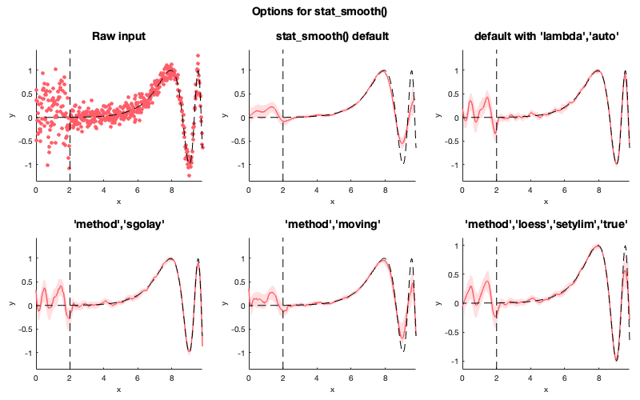 Superimposing gramm plots with update(): Plotting all the data in the background of facets
%Inspired by https://drsimonj.svbtle.com/plotting-background-data-for-groups-with-ggplot2 load fisheriris.mat clear g figure('Position',[100 100 800 600]); %Create an histogram of all the data in the background (no facet_ is given yet) g(1,1)=gramm('x',meas(:,2)); g(1,1).set_names('x','Sepal Width','column',''); g(1,1).stat_bin('fill','all'); %histogram g(1,1).set_color_options('chroma',0,'lightness',75); %We make it light grey g(1,1).set_title('Overlaid histograms'); %Create a scatter plot of all the data in the background (no facet_ is given yet) g(2,1)=gramm('x',meas(:,2),'y',meas(:,1)); g(2,1).set_names('x','Sepal Width','column','','y','Sepal Length'); g(2,1).geom_point(); %Scatter plot g(2,1).set_color_options('chroma',0,'lightness',75); %We make it light grey g(2,1).set_point_options('base_size',6); g(2,1).set_title('Overlaid scatter plots'); g.draw(); %Draw the backgrounds g(1,1).update('color',species); %Add color with update() g(1,1).facet_grid([],species); %Provide facets g(1,1).stat_bin('dodge',0); %Histogram (we set dodge to zero as facet_grid makes it useless) g(1,1).set_color_options(); %Reset to default colors g(1,1).no_legend(); g(1,1).axe_property('ylim',[-2 30]); %We have to set y scale manually, as the automatic scaling from the first plot was forgotten g(2,1).update('color',species); %Add color with update() g(2,1).facet_grid([],species); %Provide facets g(2,1).geom_point(); g(2,1).set_color_options(); g(2,1).no_legend(); %Set global axe properties g.axe_property('TickDir','out','XGrid','on','Ygrid','on','GridColor',[0.5 0.5 0.5]); %Draw the news elements g.draw();
Use custom layouts in gramm, marginal histogram example
load fisheriris.mat clear g figure('Position',[100 100 550 550]); %Create x data histogram on top g(1,1)=gramm('x',meas(:,2),'color',species); g(1,1).set_layout_options('Position',[0 0.8 0.8 0.2],... %Set the position in the figure (as in standard 'Position' axe property) 'legend',false,... % No need to display legend for side histograms 'margin_height',[0.02 0.05],... %We set custom margins, values must be coordinated between the different elements so that alignment is maintained 'margin_width',[0.1 0.02],... 'redraw',false); %We deactivate automatic redrawing/resizing so that the axes stay aligned according to the margin options g(1,1).set_names('x',''); g(1,1).stat_bin('geom','stacked_bar','fill','all','nbins',15); %histogram g(1,1).axe_property('XTickLabel',''); % We deactivate tht ticks %Create a scatter plot g(2,1)=gramm('x',meas(:,2),'y',meas(:,1),'color',species); g(2,1).set_names('x','Sepal Width','y','Sepal Length','color','Species'); g(2,1).geom_point(); %Scatter plot g(2,1).set_point_options('base_size',6); g(2,1).set_layout_options('Position',[0 0 0.8 0.8],... 'legend_pos',[0.83 0.75 0.2 0.2],... %We detach the legend from the plot and move it to the top right 'margin_height',[0.1 0.02],... 'margin_width',[0.1 0.02],... 'redraw',false); g(2,1).axe_property('Ygrid','on'); %Create y data histogram on the right g(3,1)=gramm('x',meas(:,1),'color',species); g(3,1).set_layout_options('Position',[0.8 0 0.2 0.8],... 'legend',false,... 'margin_height',[0.1 0.02],... 'margin_width',[0.02 0.05],... 'redraw',false); g(3,1).set_names('x',''); g(3,1).stat_bin('geom','stacked_bar','fill','all','nbins',15); %histogram g(3,1).coord_flip(); g(3,1).axe_property('XTickLabel',''); %Set global axe properties g.axe_property('TickDir','out','XGrid','on','GridColor',[0.5 0.5 0.5]); g.set_title('Fisher Iris, custom layout'); g.set_color_options('map','d3_10'); g.draw();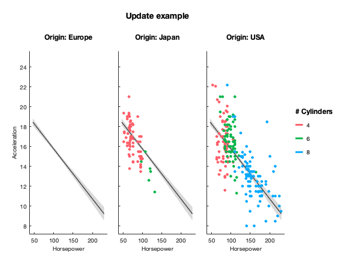
Plot one variable against many others
%Inspired by: https://drsimonj.svbtle.com/plot-some-variables-against-many-others %Convert structure to a table cars_table=struct2table(cars); %Use stack to transform the wide table to a long format T=stack(cars_table,{'Displacement' 'Weight' 'Acceleration'}); %Use the variable resutling from the stacking as x g=gramm('x',T.Displacement_Weight_Acceleration,'y',T.MPG,'color',T.Horsepower,'marker',T.Cylinders,'subset',T.Cylinders~=3 & T.Cylinders~=5 & T.Model_Year<75); %Use the stacking indicator as facet variable g.facet_wrap(T.Displacement_Weight_Acceleration_Indicator,'scale','independent'); g.set_point_options('base_size',7); g.set_continuous_color('LCH_colormap',[20 80 ; 40 30 ; 260 260 ]); g.set_names('y','MPG','x','Value','column','','color','HP','marker','# Cylinders'); g.geom_point(); g.axe_property('TickDir','out','XGrid','on','Ygrid','on','GridColor',[0.5 0.5 0.5]); figure('Position',[100 100 700 350]); g.draw();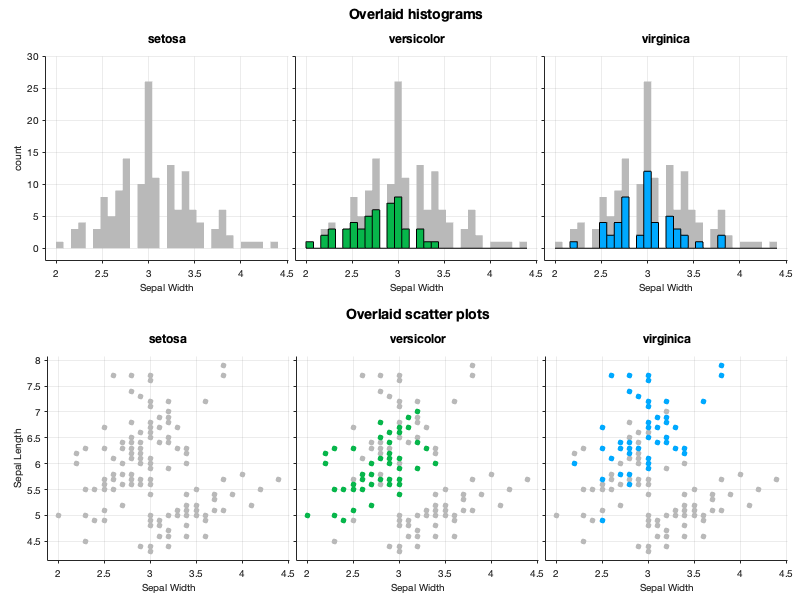
Customizing color maps with set_color_options()
With the method set_color_options(), automatic color generation for color and lightness groups can be tweaked
%Default: LCH-based colormap with hue variation clear g g(1,1)=gramm('x',cars.Origin,'y',cars.Horsepower,'color',cars.Origin); g(1,1).stat_summary('geom',{'bar'},'dodge',0); g(1,2)=copy(g(1)); g(1,3)=gramm('x',cars.Origin,'y',cars.Horsepower,'lightness',cars.Origin); g(2,1)=copy(g(1)); g(2,2)=copy(g(1)); g(2,3)=copy(g(1)); g(1,1).set_title('Default LCH (''color'' groups)','FontSize',12); %Possibility to change the hue range as well as lightness and chroma of %the LCH-based colormap g(1,2).set_color_options('hue_range',[-60 60],'chroma',40,'lightness',90); g(1,2).set_title('Modified LCH (''color'' groups)','FontSize',12); %Possibility to change the lightness and chroma range of the LCH-based %colormap when a 'lightness' variable is given g(1,3).stat_summary('geom',{'bar'},'dodge',0); g(1,3).set_color_options('lightness_range',[0 95],'chroma_range',[0 0]); g(1,3).set_title('Modified LCH (''lightness'' groups)','FontSize',12); %Go back to Matlab's defauls colormap g(2,1).set_color_options('map','matlab'); g(2,1).set_title('Matlab 2014B+ ','FontSize',12); %Brewer colormap 1 g(2,2).set_color_options('map','brewer1'); g(2,2).set_title('Color Brewer 1','FontSize',12); %Brewer colormap 2 g(2,3).set_color_options('map','brewer2'); g(2,3).set_title('Color Brewer 2','FontSize',12); %Some methods can be called on all objects at the same time ! g.axe_property('YLim',[0 140]); g.axe_property('XTickLabelRotation',60); %Should work for recent Matlab versions g.set_names('x','Origin','y','Horsepower','color','Origin','lightness','Origin'); g.set_title('Colormap customizations examples'); figure('Position',[100 100 800 600]) g.draw();
Less than 2 samples for CI computation...Skipping Less than 2 samples for CI computation...Skipping Less than 2 samples for CI computation...Skipping Less than 2 samples for CI computation...Skipping Less than 2 samples for CI computation...Skipping Less than 2 samples for CI computation...Skipping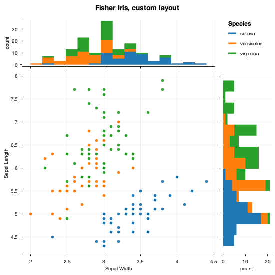
Customizing color/lightness maps and legends with set_color_options()
With the method set_color_options(), automatic color generation for color and lightness groups can be tweaked
clear g g(1,1)=gramm('x',cars.Origin_Region,'y',cars.Horsepower,'color',cars.Origin_Region,'lightness',cars.Cylinders,... 'subset',cars.Cylinders==4 | cars.Cylinders==6); g(1,1).stat_summary('geom',{'bar'},'dodge',1.3,'width',1.2); g(1,2) = copy( g(1,1) ); g(1,3) = copy( g(1,1) ); g(2,1) = copy( g(1,1) ); g(2,2) = copy( g(1,1) ); % Default lightness/chroma is beter suited for more lightness categories g(1,1).set_title('Default LCH, default legend','FontSize',12); % It is possible to restrict the lightness/chroma changes across the % lightness categories. Forcing the legend to 'separate' here makes the % lightness legends use the first color instead of gray levels g(1,2).set_color_options('lightness_range',[70 40],'chroma_range',[60 70],'legend','separate'); g(1,2).set_title('Modified LCH, lightness legend with color','FontSize',12); % Pre-defined color/lightness maps can yeild better results than default % parametric LCH colormaps g(1,3).set_color_options('map','brewer_paired'); g(1,3).set_title('Brewer colormap','FontSize',12); % Witht the 'expand' legend option, all ligthness/color combinations are % presented in the legend g(2,1).set_color_options('map','d3_20','legend','expand'); g(2,1).set_title('D3.js colormap, ''expand'' legend option','FontSize',12); g(2,2)=gramm('x',cars.Origin,'y',cars.Horsepower,'color',cars.Origin,... 'marker',cars.Origin,'subset',cars.Cylinders==4 | cars.Cylinders==6); g(2,2).stat_summary('geom',{'bar'},'dodge',0,'width',0.15); g(2,2).stat_summary('geom',{'point'},'dodge',0,'width',1); g(2,2).set_point_options('base_size',10); g(2,3)=copy(g(2,2)); g(2,2).set_title('D3.js colormap','FontSize',12); g(2,2).set_color_options('map','d3_10'); % With the 'merge' legend option, plots that use the same categories for % color and marker/linestyle/size will be combined g(2,3).set_color_options('map','d3_10','legend','merge'); g(2,3).set_title('D3.js colormap, ''merge'' legend option','FontSize',12); g.axe_property('YLim',[0 160]); g.axe_property('XTickLabelRotation',60); %Should work for recent Matlab versions g.set_names('x','Origin','y','Horsepower','color','Origin','marker','Origin','lightness','# Cyl'); g.set_title('Color/Lightness maps and legend customizations examples'); figure('Position',[100 100 800 600]); g.draw();
Less than 2 samples for CI computation...Skipping Less than 2 samples for CI computation...Skipping Less than 2 samples for CI computation...Skipping Less than 2 samples for CI computation...Skipping
Using a continuous color scale
When the variable provided as 'color' contains too many different values (>15), or when set_continuous_color is used, gramm switches from a categorical color scale to a gradient-based continuous color scale.
load spectra.mat %Here we create x as a 1xN array (see example above), and use a MxN matrix %for y. Color applies to the M rows of y. g18=gramm('x',900:2:1700,'y',NIR,'color',octane); g18.set_names('x','Wavelength (nm)','y','NIR','color','Octane'); g18.set_continuous_color('colormap','hot'); g18.geom_line; figure('Position',[100 100 800 450]); g18.draw();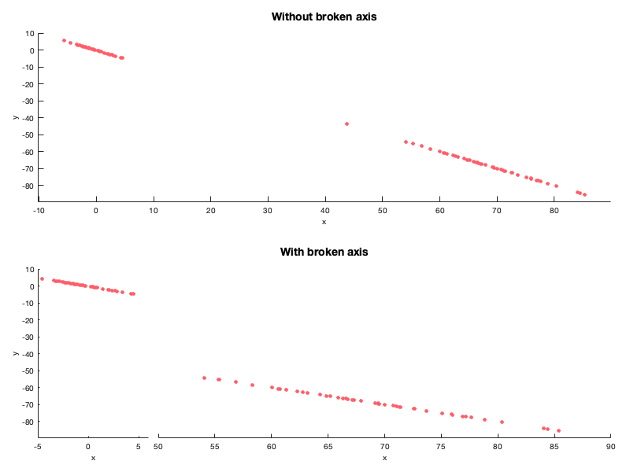
Changing the order of elements with set_order_options()
By default, gramm uses grouping data in increasing order of the group value (alphabetical for cellstr, numerical for arrays). Using set_order_options(), it is possible to fine tweak the orders of color, lightness, facet rows and columns, as well as categorical X
y=[36 38 40 42 44 46];
x={'XS' 'S' 'M' 'L' 'XL' 'XXL'};
clear g
%By default, both x and lightness are ordered according to sorted (here
%alphabetically) input
g(1,2)=gramm('x',x,'y',y,'lightness',x);
g(1,2).stat_summary('geom','bar','dodge',0);
g(1,2).set_title('Default output');
%By using set_order_options('x',0), x are presented in the raw input order. The
%color is still sorted
g(2,1)=gramm('x',x,'y',y,'lightness',x);
g(2,1).stat_summary('geom','bar','dodge',0);
g(2,1).set_order_options('x',0);
g(2,1).set_title('x in input order');
%By using set_order_options('x',0,'lightness',{'XS' 'S' 'M' 'L' 'XL'
%'XXL'}), we also order lightness in the desired order, here by
%directly providing the desired order.
g(2,2)=gramm('x',x,'y',y,'lightness',x);
g(2,2).stat_summary('geom','bar','dodge',0);
%g(2,2).set_order_options('x',0,'lightness',{'XS' 'S' 'M' 'L' 'XL' 'XXL'});
g(2,2).set_title({'x in input order' 'lightness in custom order'});
%Examples below do not fail but might truncate data
g(2,2).set_order_options('x',0,'lightness',{'XXL' 'XL' 'L' 'B' 'M' 'S' 'XS' }); %additional category is ignored
%g(2,2).set_order_options('x',0,'lightness',{'XXL' 'XL' 'L' 'M' 'XS'}) %Missing category is truncated
%Examples below fail due to type problems
%g(2,2).set_order_options('x',0,'lightness',{'XXL' 'XL' 'L' 'M' 'S' 1})
%It is also possible to set up a custom order (indices within the sorted
%input), here used to inverse lightness map. This way is a bit more
%practical for floating point numerical variables. For cells of string, the
%way above is easier.
g(2,3)=gramm('x',x,'y',y,'lightness',x);
g(2,3).stat_summary('geom','bar','dodge',0);
g(2,3).set_order_options('x',0,'lightness',[6 4 1 2 3 5]);
g(2,3).set_title({'x in input order' 'lightness in custom order'});
%Example below properly fail
%g(2,3).set_order_options('x',0,'lightness',[6 4 1 2 3 3])
g.set_names('x','US size','y','EU size','lightness','US size');
g.axe_property('YLim',[0 48]);
figure('Position',[100 100 800 600]);
g.draw();
Less than 2 samples for CI computation...Skipping Less than 2 samples for CI computation...Skipping Less than 2 samples for CI computation...Skipping Less than 2 samples for CI computation...Skipping Less than 2 samples for CI computation...Skipping Less than 2 samples for CI computation...Skipping Less than 2 samples for CI computation...Skipping Less than 2 samples for CI computation...Skipping Less than 2 samples for CI computation...Skipping Less than 2 samples for CI computation...Skipping Less than 2 samples for CI computation...Skipping Less than 2 samples for CI computation...Skipping ordering given as values Less than 2 samples for CI computation...Skipping Less than 2 samples for CI computation...Skipping Less than 2 samples for CI computation...Skipping Less than 2 samples for CI computation...Skipping Less than 2 samples for CI computation...Skipping Less than 2 samples for CI computation...Skipping ordering given as indices Less than 2 samples for CI computation...Skipping Less than 2 samples for CI computation...Skipping Less than 2 samples for CI computation...Skipping Less than 2 samples for CI computation...Skipping Less than 2 samples for CI computation...Skipping Less than 2 samples for CI computation...Skipping
Customize the size and style of graphic elements with set_line_options() and set_point_options()
clear g x=repmat(1:10,1,5); y=reshape(bsxfun(@times,1:5,(1:10)'),1,50); sz=reshape(repmat(1:5,10,1),1,50); g(1,1)=gramm('x',x,'y',y,'size',sz); g(1,1).geom_point(); g(1,1).geom_line(); g(1,1).set_title('Default'); g(1,2)=gramm('x',x,'y',y,'size',sz); g(1,2).geom_point(); g(1,2).geom_line(); g(1,2).set_line_options('base_size',1,'step_size',0.2,'style',{':' '-' '--' '-.'}); g(1,2).set_point_options('base_size',4,'step_size',1); g(1,2).set_title('Modified point and line base and step size + line style'); g(2,1)=gramm('x',x,'y',y,'size',sz,'subset',sz~=3 & sz~=4); g(2,1).geom_line(); g(2,1).geom_point(); g(2,1).set_title('Default (size according to category)'); g(2,2)=gramm('x',x,'y',y,'size',sz,'subset',sz~=3 & sz~=4); g(2,2).geom_line(); g(2,2).geom_point(); g(2,2).set_line_options('use_input',true,'input_fun',@(s)1.5+s); g(2,2).set_point_options('use_input',true,'input_fun',@(s)5+s*2); g(2,2).set_title('Size according to value'); g.set_title('Customization of line and point options'); figure('Position',[100 100 800 600]); g.draw();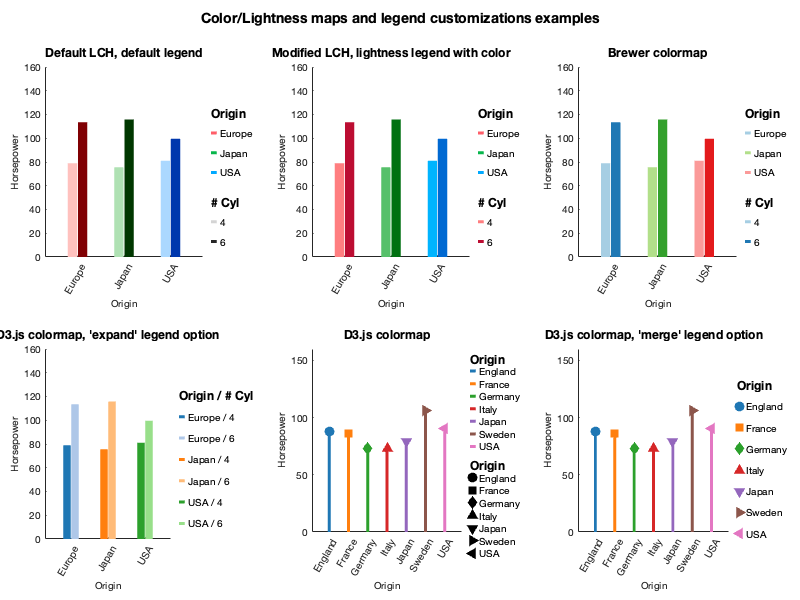
Decorate plot backgrounds with geom_polygon()
clear g g=gramm('x',cars.Model_Year,'y',cars.MPG,'color',cars.Cylinders,'subset',cars.Cylinders~=3 & cars.Cylinders~=5); g.facet_grid([],cars.Origin_Region); g.geom_point(); g.stat_glm('geom','line'); g.set_names('column','','x','Year of production','y','Fuel economy (MPG)','color','# Cylinders'); g(1,2)=copy(g(1)); g(2,1)=copy(g(1)); g(2,2)=copy(g(1)); % Color mapping for the polygons cmap = [1 0.5 0.5; % red (bad gas mileage) 1 1 0.5; % yellow (reasonable gas mileage) 0.5 1 0.5]; % green (good gas mileage) % Standard geom_polygon call, 'x' and 'y' are used to provide polygons vertex coordinates, Possibility to manually set fill, color, style and alpha. g(1,1).geom_polygon('x',{[50 90 90 50] ; [50 90 90 50] ; [50 90 90 50]},'y',{[5 5 20 20]; [20 20 30 30]; [30 30 50 50]},'color',cmap,'alpha',0.3); % Simplified geom_polygon call, 'x' was omitted and only pairs of 'y' values are provided, % specifying lower and upper limits of horizontal areas. g(1,2).geom_polygon('y',{[5 20]; [20 30]; [30 50]},'color',cmap); %Possibility to set color and fill by indices (using a column vector of %integers. Colormap generated between 1 and max(vector)) g(2,1).geom_polygon('y',{[5 20]; [20 30]; [30 50]},'color',[1 ; 3; 2]); % Single fill, alpha, color and styles are automatically extended to all polygons in the call g(2,2).geom_polygon('y',{[5 20]; [30 50]},'color',[1 0 0],'line_style',{'--'},'line_color',[0 0 0.5]); % Possibility to do multiple calls g(2,2).geom_polygon('x',{[72 80 76]},'y',{[22 22 28]}); %Default is grey g.set_title('Decorate plot backgrounds with geom_polygon()'); figure('Position',[100 100 800 600]); g.draw();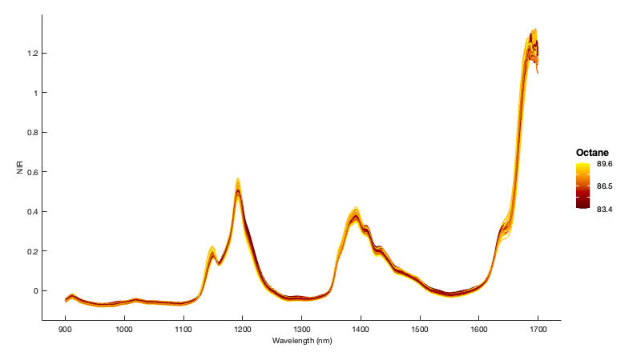
Advanced customization of gramm figures
The options for the geom_ and stat_ methods, as well as the axe_property() method allow for high-level customization of gramm figures. Since the gramm object allows access to all handles for graphical objects, it's also possible to do more precise customizations and modifications of a gramm figure once it's drawn. In this figure:
- Text sizes and fonts are changed with set_text_options()
- Y grid is turned on on all facets with axe_property('YGrid','on')
- A vertical line and text is added to only one of the facets by using the facet_axes_handles public property of gramm objects
- All points are made smaller by using their handles results.grom_point_handle in the set() function
- Similarly, all confidence areas are made grey g.results.stat_glm.area_handle
- A subset of the glm lines are made thicker by calling set() on a subset teir handles |g.results.stat_glm(g.results.color==4).line_handle]
It is also possible to set where the gramm axes are drawn by using the set_parent(parent_handle) function, which receives the handle of a figure/uipanel/uitab object to use as parent as argument.
f=figure('Position',[100 100 800 500]); %Create fake button c=uicontrol('Style','pushbutton','String','Dummy','Units','normalized','Position',[0.8 0.45 0.15 0.1]); %Create uipanel to put our gramm plots p=uipanel('Position',[0.05 0.1 0.7 0.8],'Parent',f,'BackgroundColor',[1 1 1]); % Starting with the example figure load example_data; g=gramm('x',cars.Model_Year,'y',cars.MPG,'color',cars.Cylinders,'subset',cars.Cylinders~=3 & cars.Cylinders~=5); g.facet_grid([],cars.Origin_Region); g.stat_glm(); g.geom_point(); g.set_names('column','Origin','x','Year of production','y','Fuel economy (MPG)','color','# Cylinders'); g.set_title('Fuel economy of new cars between 1970 and 1982'); g.axe_property('YGrid','on'); g.set_parent(p); g.set_text_options('font','Courier',... 'base_size',12,... 'label_scaling',0.8,... 'legend_scaling',1.5,... 'legend_title_scaling',1.5,... 'facet_scaling',1,... 'title_scaling',1.5); g.draw(); %It's possible to use the axes handles to add elements to single axes line([75 75],[0 50],'Color','k','LineStyle','--','Parent',g.facet_axes_handles(1)); text(75.3,47,{'Important' 'event'},'Parent',g.facet_axes_handles(1),'FontName','Courier'); %It's also possible to change properties of graphical elements %Either all at once set([g.results.geom_point_handle],'MarkerSize',5); set([g.results.stat_glm.area_handle],'FaceColor',[0.4 0.4 0.4]); %Or on a subset of them (here only for the lines of glms of 4-cylinder cars) set([g.results.stat_glm(g.results.color==4).line_handle],'LineWidth',3);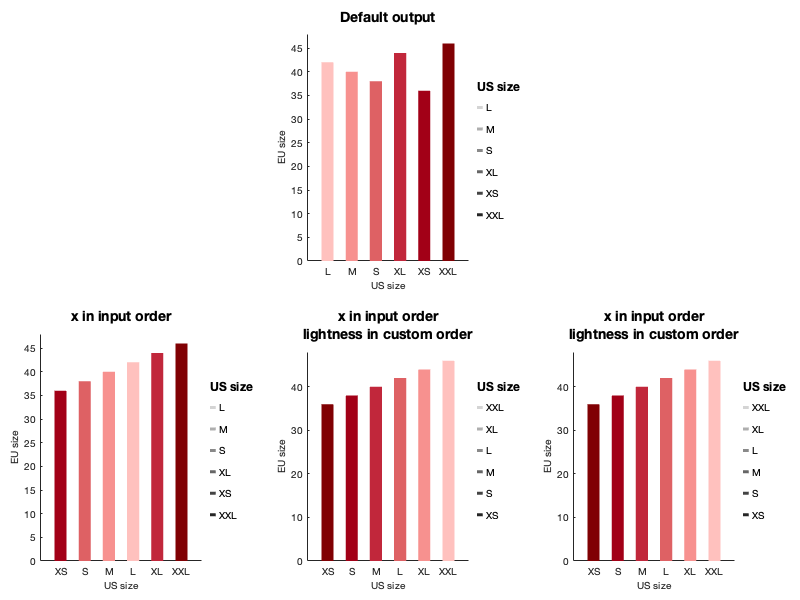
Using different input formats for x and y (1D arrays, cells of arrays, 2D arrays)
Standard ggplot-like input (arrays for everything) Note the continuous line connecting all blue data points, gramm can't know when to start a new line in this case
Y=[1 2 3 4 5 2 3 4 5 6 3 4 5 6 7]; X=[1 2 3 4 5 0 1 2 3 4 -1 0 1 2 3]; C=[1 1 1 1 1 2 2 2 2 2 2 2 2 2 2]; figure g11=gramm('x',X,'y',Y,'color',C); g11.geom_line(); g11.draw();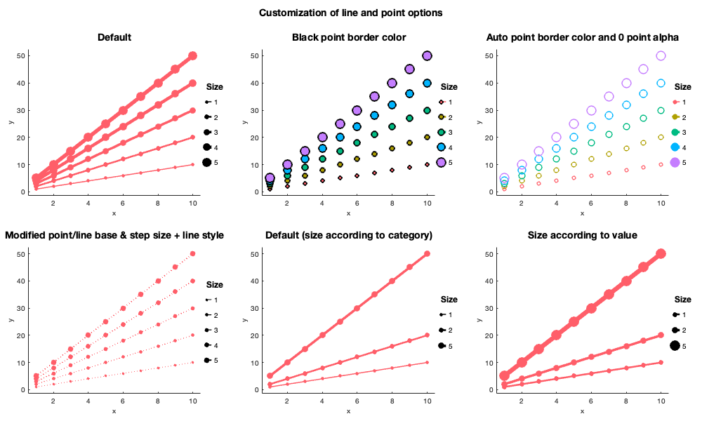
Adding a group variable solves the problem in a ggplot-like way
G=[1 1 1 1 1 2 2 2 2 2 3 3 3 3 3]; figure g12=gramm('x',X,'y',Y,'color',C,'group',G); g12.geom_line(); g12.draw();
For a more matlab-like solution, Y and X can be 2D arrays, rows will automatically be considered as groups. as a consequence grouping data (color, etc...) are provided for the rows !
Y=[1 2 3 4 5;2 3 4 5 6; 3 4 5 6 7]; X=[1 2 3 4 5; 0 1 2 3 4; -1 0 1 2 3]; C=[1 2 2]; figure g13=gramm('x',X,'y',Y,'color',C); g13.geom_line(); g13.draw();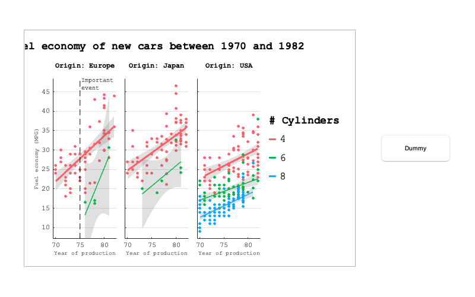
If all X values are the same, it's possible to provide X as a single row
X=[1 2 3 4 5]; figure g14=gramm('x',X,'y',Y,'color',C); g14.geom_line(); g14.draw();
Similar results can be obtained with cells of arrays
Y={[1 2 3 4 5] [2 3 4 5 6] [3 4 5 6 7]};
X={[1 2 3 4 5] [0 1 2 3 4] [-1 0 1 2 3]};
figure
g15=gramm('x',X,'y',Y,'color',C);
g15.geom_line();
g15.draw();
Y={[1 2 3 4 5] [2 3 4 5 6] [3 4 5 6 7]};
X=[1 2 3 4 5];
figure
g16=gramm('x',X,'y',Y,'color',C);
g16.geom_line();
g16.draw();
With cells of arrays, there is the opportunity to have different lengths for different groups
Y={[1 2 3 4 5] [3 4 5] [3 4 5 6 7]};
X={[1 2 3 4 5] [1 2 3] [-1 0 1 2 3]};
figure
g17=gramm('x',X,'y',Y,'color',C);
g17.geom_line();
g17.draw();
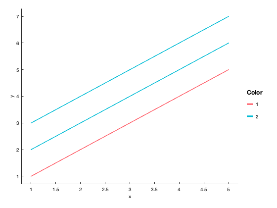 Raw matlab code equivalent to the first figure (in paper.md)
figure('Position',[100 100 800 400],'Color',[1 1 1]); % Define groups cyl = [4 6 8]; % Manually orig = unique(cars.Origin_Region); % Based on data % Loop over groups for oi = 1:length(orig) % External loop on the axes % Axes creation ax = subplot(1,length(orig),oi); hold on for ci = 1:length(cyl) %Internal loop on the colors % Data selection sel = strcmp(cars.Origin_Region,orig{oi}) & ... cars.Cylinders==cyl(ci) & ... ~isnan(cars.Model_Year) & ~isnan(cars.MPG); % Plotting of raw data plot(cars.Model_Year(sel),cars.MPG(sel),'.', ... 'MarkerSize',15); % Keep the same color for the statistics ax.ColorOrderIndex = ax.ColorOrderIndex - 1; % Statistics (linear fit and plotting) b = [ones(sum(sel),1) cars.Model_Year(sel)] \ ... cars.MPG(sel); x_fit = [min(cars.Model_Year(sel)) ... max(cars.Model_Year(sel))]; plot(x_fit, x_fit * b(2) + b(1),'LineWidth',1.5); end % Axes legends title(['Origin: ' orig{oi}]); xlabel('Year'); ylabel('Fuel Economy (MPG)'); end % Ugly color legend l = legend('4','','6','','8','','Location','southeast'); title(l,'#Cyl');